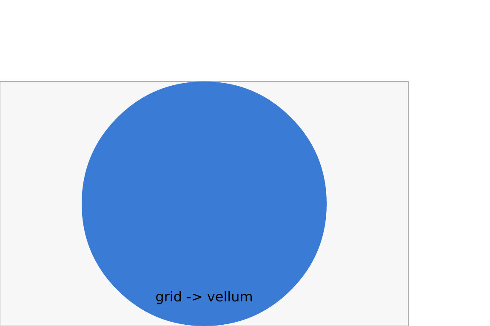
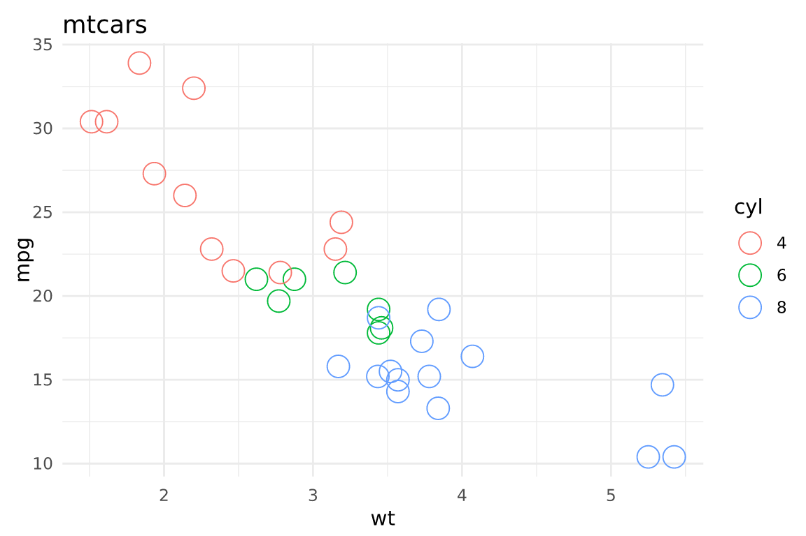

You do not have to rewrite existing graphics to draw them with
vellum’s backend. as_vellum() converts a grid grob tree, or
a ggplot2 plot, into a vl_scene(), and
render_grid() does that and writes the result to a file.
This is the interop path: grid-based graphics rendered by vellum’s
deterministic PNG / SVG / PDF backend.
How it works
grid graphics are lazy: a grob’s real geometry is only known once a
device and viewport resolve its units. as_vellum() leans on
that machinery rather than reimplementing it. It spins up an offscreen
grid device, lets grid resolve every coordinate to an absolute position,
and then emits the corresponding vellum grobs. The output is a normal
vellum_scene, so everything else in vellum (multi-backend
render(), scene_raster(),
display()) applies.
A grid grob tree
Any grob or gTree works. Here is a small hand-built one.
library(grid)
g <- gTree(children = gList(
rectGrob(gp = grid::gpar(fill = "grey97", col = "grey70")),
circleGrob(r = 0.3, gp = grid::gpar(fill = "#3a7bd5", col = NA)),
textGrob("grid -> vellum", y = 0.12, gp = grid::gpar(fontface = "bold"))
))
as_vellum(g, width = 5, height = 3)
as_vellum() returns a scene, which auto-prints
(displays) here. Assign it and you can render it to any backend:
render_grid(g, "grid.png", width = 5, height = 3)
render_grid(g, "grid.pdf", width = 5, height = 3)A ggplot2 plot
Passing a ggplot object works the same way: ggplot builds a gtable of
grobs, and as_vellum() renders that.
library(ggplot2)
p <- ggplot(mtcars, aes(wt, mpg, colour = factor(cyl))) +
geom_point(size = 2) +
labs(title = "mtcars", colour = "cyl") +
theme_minimal()
as_vellum(p, width = 6, height = 4)
To write it out, use render_grid() with the format in
the file extension:
render_grid(p, "mtcars.png", width = 6, height = 4)
render_grid(p, "mtcars.svg", width = 6, height = 4)lattice output works through the same door: draw the lattice object
to capture its grob tree, or pass a captured grob to
as_vellum().
When to use interop versus the native API
Reach for as_vellum() / render_grid() when
you already have grid, ggplot2, or lattice output and want vellum’s
deterministic, multi-backend rendering (for example byte-stable PNGs for
snapshot tests, or one plot emitted to PNG, SVG, and PDF from the same
source).
Build with the native vl_scene() API instead when you
want what the retained scene graph offers: named and editable nodes,
hit-testing, and a per-element scene_model() (see
vignette("retained-mode")). Interop reproduces the
pixels of a grid scene, but a grammar built directly on vellum
is what carries the per-element identity that interactivity needs.
A native vellum graphics device (so plot() and friends
target vellum directly) is future work; until then,
as_vellum() is the bridge. ```